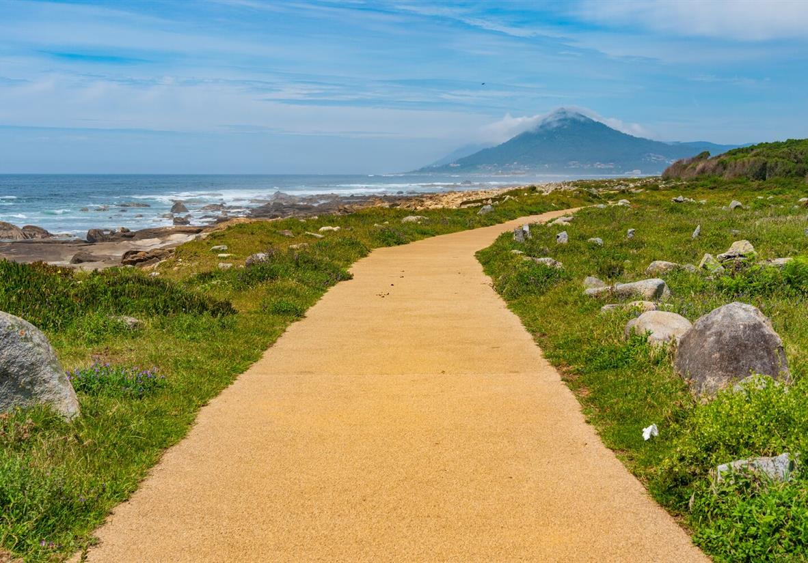

Sara · Easy Camino Santiago
Tu experta en el Camino de Santiago
¿Te llamamos gratis?
Déjanos tu número y te llamamos en menos de 24h para asesorarte sin compromiso.
Tu número solo se usará para llamarte. Sin spam.
Tu experta en el Camino de Santiago
Déjanos tu número y te llamamos en menos de 24h para asesorarte sin compromiso.
Tu número solo se usará para llamarte. Sin spam.

La variante costera más espectacular del Camino de Santiago. Sigue el Atlántico desde Viana do Castelo, con playas de arena blanca, acantilados salvajes y pueblos de pescadores que parecen detenidos en el tiempo.
Si el Camino Portugués Central es el camino de las ciudades medievales y el interior lusitano, la variante costera es la ruta de los sentidos: el rugido del Atlántico, el olor a salitre, la arena fina entre los pies y el horizonte infinito del océano que los romanos llamaban "el fin del mundo". Esta ruta discurre entre playas paradisíacas, dunas protegidas y acantilados que caen en picado sobre el mar, pasando por pueblos de pescadores donde el tiempo parece haberse detenido.
La Ruta Costera del Camino Portugués empieza en Viana do Castelo, elegante ciudad con pasado romano y marinero, y avanza hacia el norte bordeando el litoral atlántico entre marismas, pinares y playas de arena blanca. El paso por Caminha y el cruce fronterizo por la desembocadura del Miño son momentos de una belleza excepcional, muy diferente al cruce urbano de Tui-Valença del Camino Central.
Ya en Galicia, la Ruta Costera continúa por A Guarda, Baiona y Vigo, ciudad con un activo puerto deportivo y el mejor marisco del mundo, antes de unirse al Camino Central en Redondela para la recta final hacia Santiago. Es una ruta más exigente físicamente que el Camino Central —algunos tramos costeros requieren subir y bajar acantilados— pero la recompensa paisajística no tiene precio. Desde Easy Camino Santiago te planificamos cada etapa al detalle.


13 etapas con el Atlántico como protagonista, desde Viana do Castelo hasta Santiago de Compostela.
Por la desembocadura del río Lima. La salida de Viana do Castelo, con su imponente basílica de Santa Luzia sobre el monte, da paso a una etapa que sigue el litoral entre pinares costeros y dunas protegidas. Caminha, en la desembocadura del Miño frente a Galicia, es una villa pesquera de gran belleza.
Cruzando la frontera por el mar. El cruce del río Miño desde Caminha hasta A Guarda se realiza en barca —una de las experiencias más singulares de todo el Camino—, pasando junto a la isla de Ínsua con su castillo y convento. A Guarda, al pie del Monte Santa Tegra con sus restos del castro celta, te recibe ya en tierra gallega.
La costa gallega comienza. Esta es la etapa más espectacular de la ruta costera: acantilados sobre el mar, playas salvajes como la de Oia y vistas a las Islas Cíes. Baiona, donde el 1 de marzo de 1493 llegó la carabela Pinta anunciando el descubrimiento de América, es uno de los destinos más bonitos de Galicia.
El tramo más bello del recorrido costero. Desde Baiona, el Camino pasa por Vigo, con su incomparable ría y sus legendarias ostras, continúa por Arcade y remonta hasta Pontevedra, considerada por muchos peregrinos la ciudad más bonita del Camino de Santiago. Su casco histórico peatonalizado y sus plazas animadas son una recompensa perfecta antes de las etapas finales.
Todo incluido para que disfrutes del Atlántico sin preocupaciones.
Habitación privada en pensiones y posadas con vistas al mar en la ruta costera
Hoteles y casas rurales con encanto seleccionados en las principales etapas del recorrido
Precios por persona en habitación doble. Suplemento individual disponible. Consulta disponibilidad.
Albergues, pensiones u hoteles reservados y confirmados en toda la ruta costera.
Recogemos tu mochila cada mañana y la llevamos al siguiente alojamiento en la ruta costera.
Gestionamos el paso en barca por el Miño entre Caminha y A Guarda, una experiencia única.
Tu pasaporte del Camino, para sellar en cada etapa y obtener la Compostela en Santiago.
Guía completa con mapas de la costa, distancias y advertencias sobre mareas y accesos.
Línea de emergencias disponible las 24 horas. Especialmente importante en tramos costeros.
Guías prácticas para planificar cada detalle antes de salir
La lista definitiva: ropa técnica, calzado, botiquín y lo que no necesitas llevar.
Leer más → PresupuestoDesglose real de gastos: alojamiento, comida, transporte y extras. Desde 35€/día.
Leer más → PlanificaciónMayo, junio y septiembre concentran el 60% de peregrinos. Descubre qué mes es mejor para ti.
Leer más →La ruta costera más bonita del Camino de Santiago te espera. Cuéntanos tus fechas y te preparamos un presupuesto personalizado sin compromiso.